Easy Genomics: How WSLH is simplifying pathogen genomic data analytics
Kelsey Florek, PhD, MPH Senior Genomics and Data Scientist Wisconsin State Laboratory of Hygiene April 7, 2023

Supported By
AWS Diagnostic Development Initiative (DDI)
- Necessities of Next Generation Sequencing Capacity Building
- Blueprints for an NGS Data Solution
- Simplifying Genomics for Public Health Partners
Expanding Genomic Sequencing Capacity
Pre SARS-CoV-2 Pandemic
- 4x Illumina MiSeq
- 1x ONT MinION
Post SARS-CoV-2 Pandemic
- 4x Illumina MiSeq
- 2x NextSeq 2000
- 1x ONT GridION
- 1x Eppendorf epMotion
- 1x Tecan Fluent 780 NGS Dream Prep
Over 900% increase in sequencing data generation capacity
NGS Data Storage
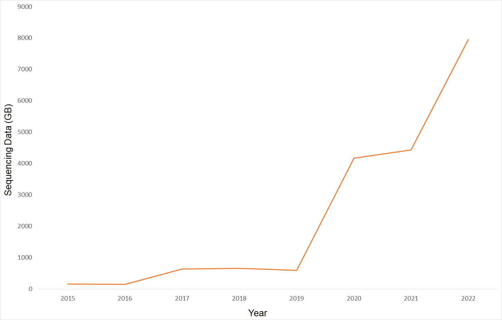Improvements in Analytical Approaches
Old Approach
- Entirely Python Based
- Limited logging and fault tolerance
- Required installing complicated and often conflicting dependencies
New Approach
- Nextflow - Nf-Core Based
- Containerized Steps
- Detailed Logging
- Compatible with a variety of Cloud and HPC environments
- Supports a high degree of job parallelization and horizontal scalability
Necessities of Next Generation Sequencing Capacity Building- Blueprints for an NGS Data Solution
- Simplifying Genomics for Public Health Partners
COVID-19 Genomics UK (COG-UK) CLIMB-COVID

COVID-19 Genomics UK (COG-UK) CLIMB-COVID
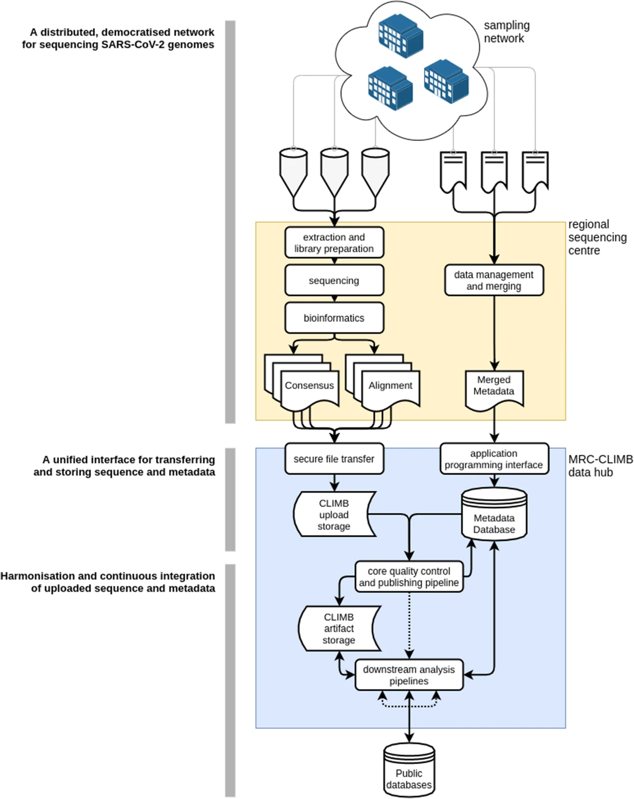Bioinformatics analytical infrastructure
- Highly scalable and capable of managing burst data
- Highly reliable and fault tolerant
- Cost effective
- Adaptable to changing needs
- Detailed logging and traceability
Connecting Data Across Siloed Systems
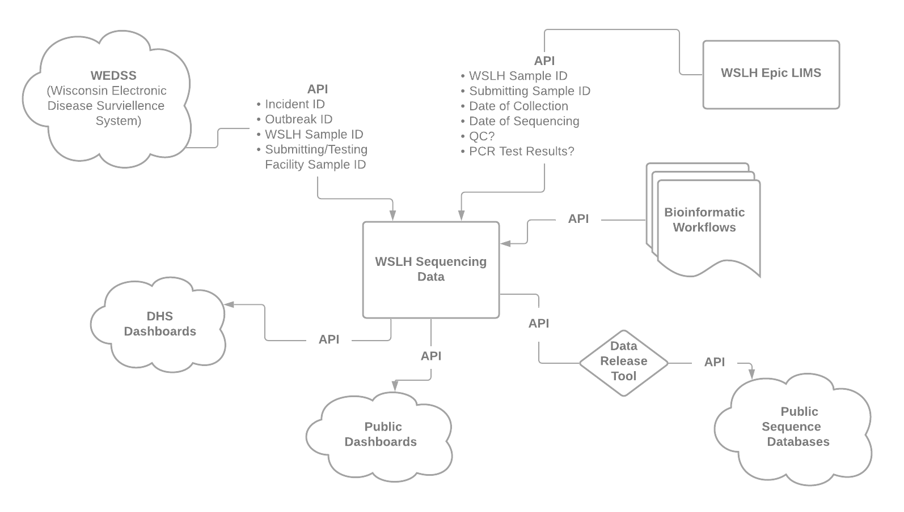WSLH Bioinformatics Analytical Infrastructure

AWS Batch
AWS Batch automatically provisions compute resources and optimizes the workload distribution based on the quantity and scale of the workloads.
AWS Batch
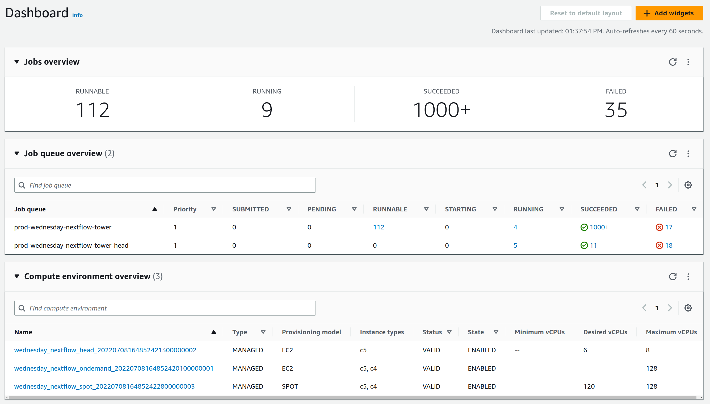AWS Batch
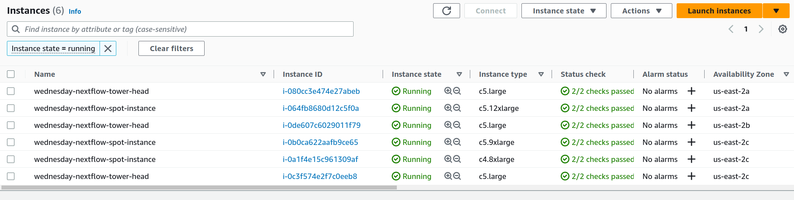 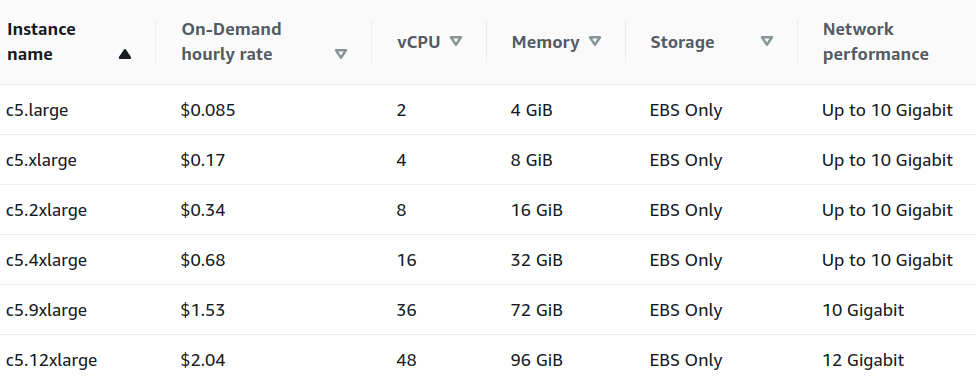Nextflow Tower is an intuitive centralized command post that enables data analysis at scale. With Tower, users can easily launch, manage, and monitor scalable Nextflow data analysis pipelines and compute environments on-premises or across the cloud providers of their choice.
Nextflow Tower - Dashboard
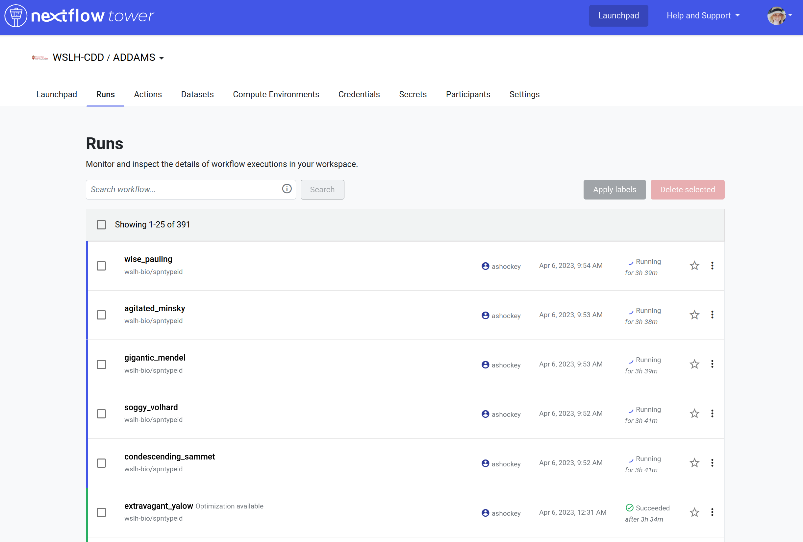Nextflow Tower - Monitor
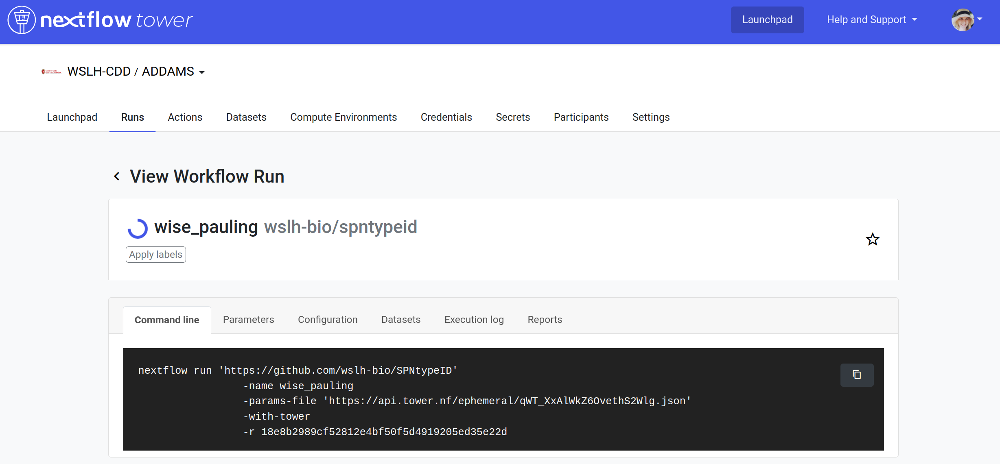Nextflow Tower - Monitor
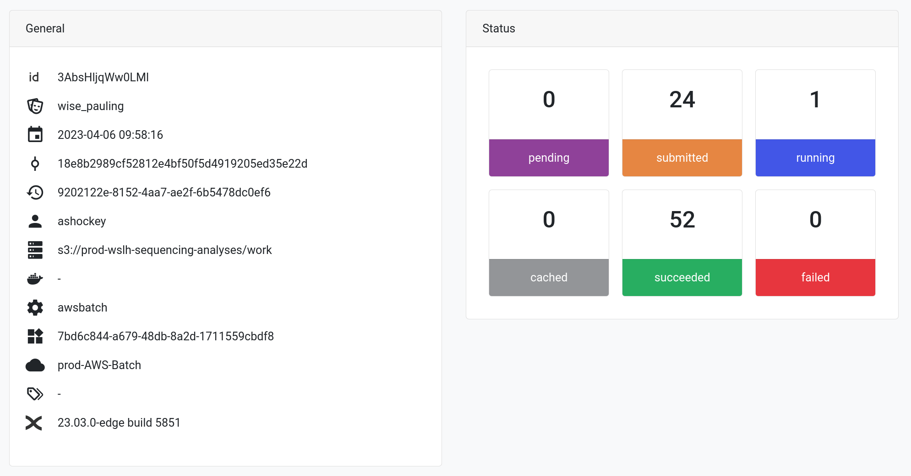Nextflow Tower - Monitor
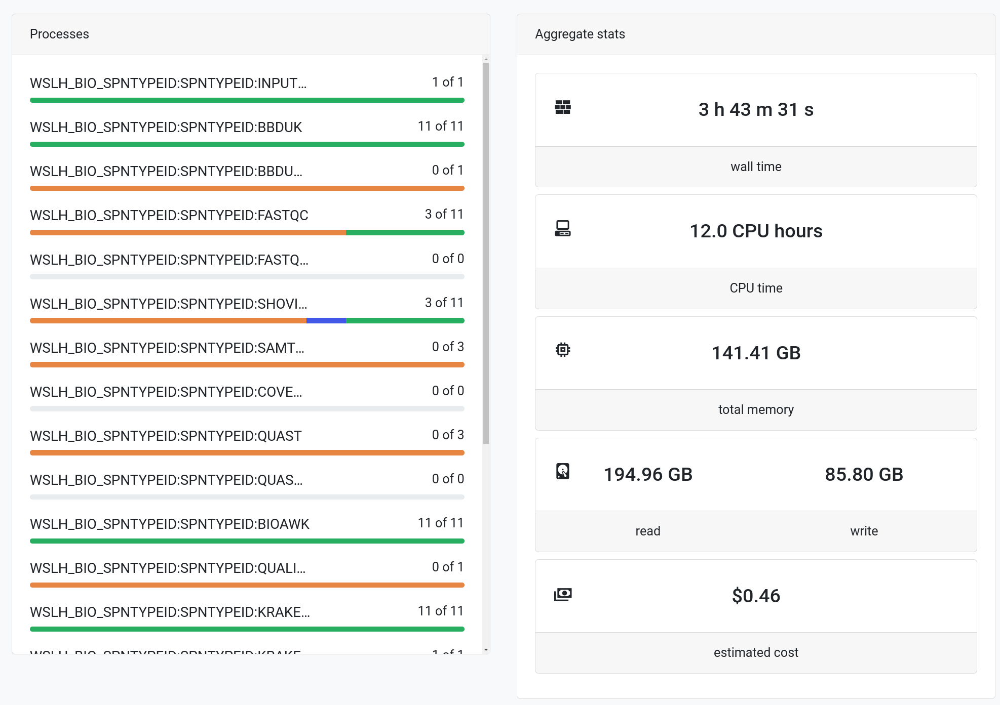Nextflow Tower - Monitor
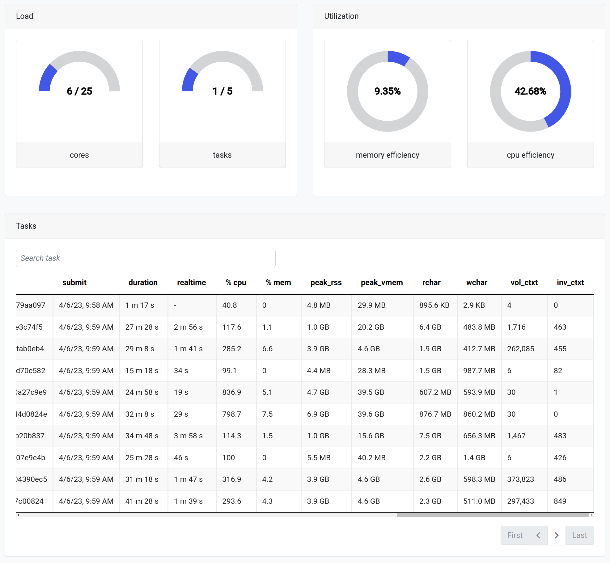Necessities of Next Generation Sequencing Capacity BuildingBlueprints for an NGS Data Solution- Simplifying Genomics for Public Health Partners
Need for a centralized resource
AMD Bioinformatics Regional Resource - Midwest Region
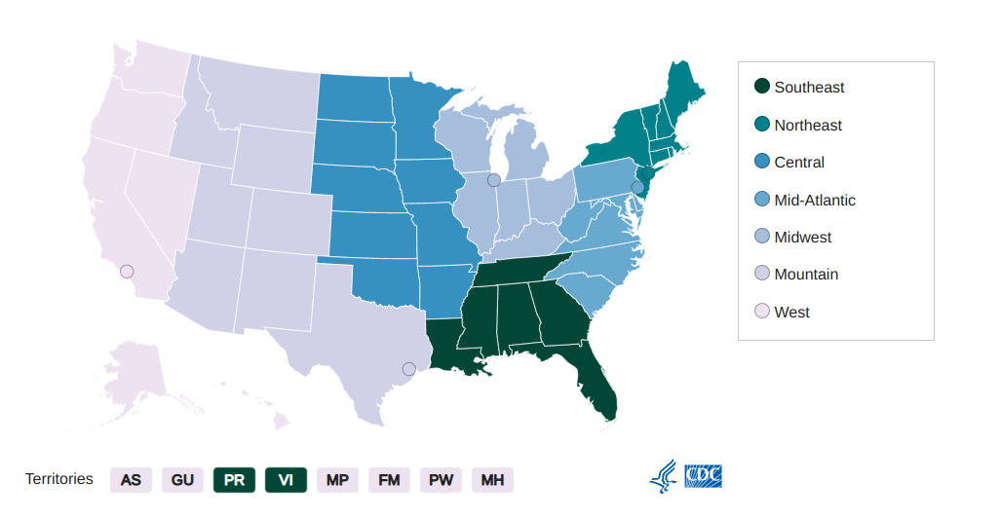
Ad-hoc Analytical Support
Provision of Computational Resources
Need for a centralized resource
SARS-CoV-2 Genomic Surveillance
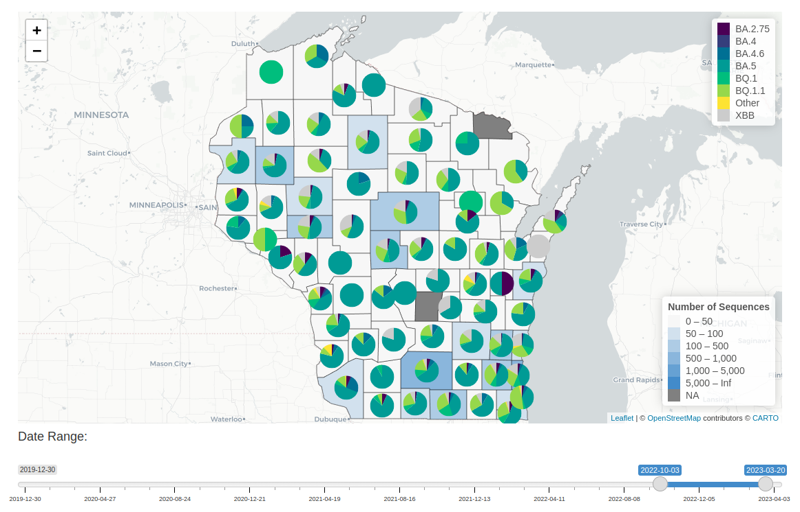Easy Genomics Partnership
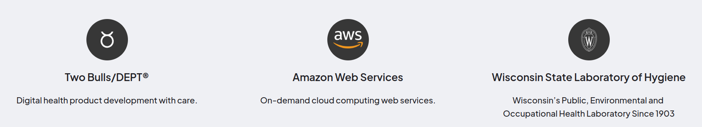Easy Genomics - Minimal Viable Product
- Simplify the process of launching and monitoring workflows
- Provide the ability for users to upload sequence data through the web browser
- Allow users to download analysis results through the web browser
- User/Lab separation
Easy Genomics - Sequence Data Upload
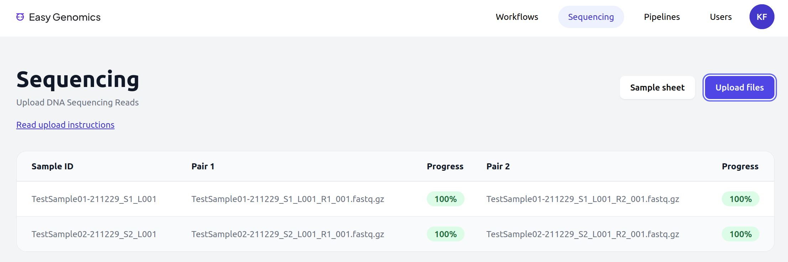Easy Genomics - Launch
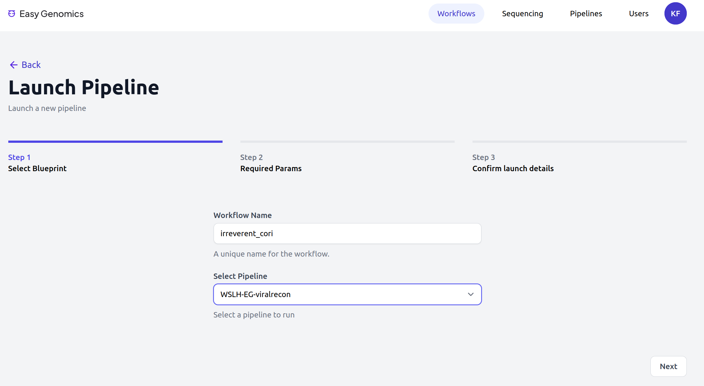Easy Genomics - Launch

Easy Genomics - Monitor
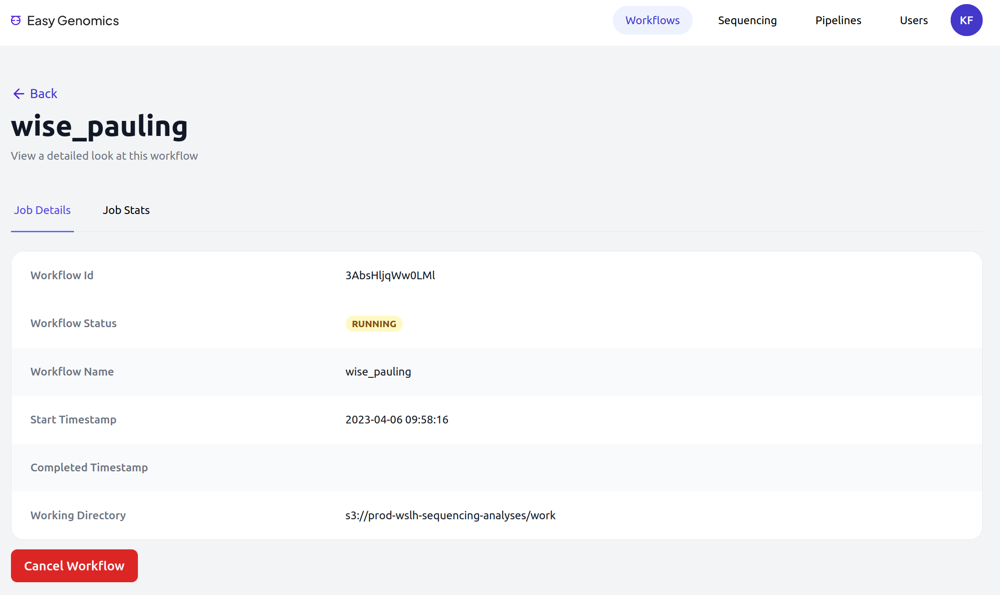Easy Genomics - Monitor

Easy Genomics
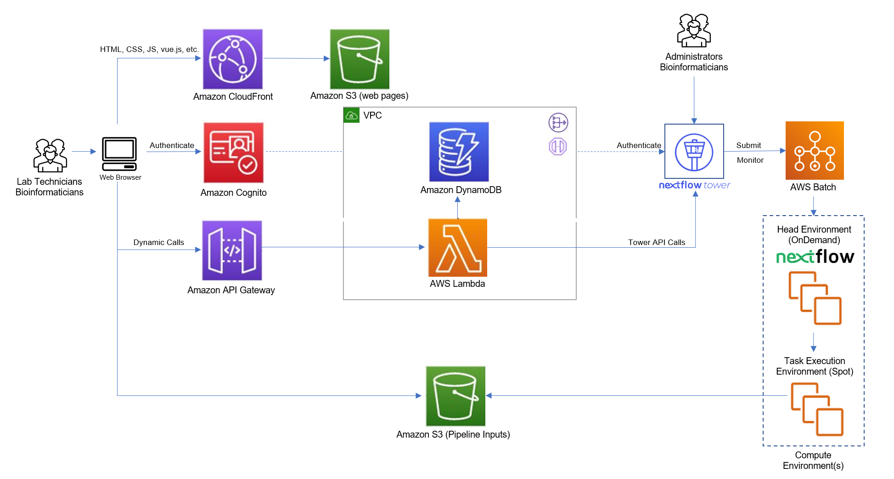Deploying Easy Genomics - Infrastructure as code (IaC)
AWS CloudFormation

Terraform

Easy Genomics - Development Roadmap
- 2023 Q2 - Finish Testing of Minimal Viable Product
- 2023 Q2 - Delivery of feature complete version (Open Source on GitHub)
- 2023 Q3 - Start v2 Development
- Expanding backend integrations
- Additional Features to Streamline the User Experience
- Expanding Feature set to include additional feedback on workflow traceability and performance